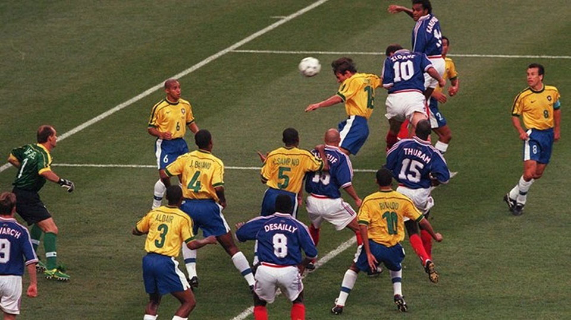

16.ª edición
Debut del formato de 32 selecciones
Copa Mundial de la FIFA Francia 1998
10 de junio – 12 de julio de 1998
País sede: Francia 🇫🇷
32 selecciones
64 partidos
Datos generales del torneo
- País sede: Francia 🇫🇷
- Ciudades sede: París, Marsella, Lyon, Toulouse, Nantes, Burdeos, Lens, Montpellier, Saint-Étienne
- Estadios: 10 recintos (incluyendo Stade de France)
- Selecciones participantes: 32
- Partidos jugados: 64
- Goles anotados: 171
- Campeón: Francia 🇫🇷
- Subcampeón: Brasil 🇧🇷
- Tercer lugar: Croacia 🇭🇷
- Cuarto lugar: Países Bajos 🇳🇱
- Máximo goleador (Bota de Oro): Davor Šuker (6 goles)
- Mejor jugador (Balón de Oro): Ronaldo (Brasil)
- Mejor portero: Fabien Barthez
- Premio Fair Play: Inglaterra 🏴
Jugadas y momentos destacados
Francia 1998 marcó el nacimiento del formato moderno de 32 selecciones, la explosión de Zidane en la final,
el debut de Croacia como potencia y uno de los torneos más recordados por los fanáticos.

Resumen del torneo
- Francia ganó su primer título mundial al derrotar 3–0 a Brasil en la final.
- Zinedine Zidane brilló con un doblete de cabeza en el Stade de France.
- Croacia debutó en un Mundial y obtuvo un histórico tercer puesto.
- Brasil, favorito absoluto, llegó a su segunda final consecutiva, pero Ronaldo jugó debilitado tras un colapso previo al partido.
- Fue el primer Mundial con 32 equipos, un formato que se mantuvo hasta 2022.
Fase final (últimos 4)
Semifinales
- 🇧🇷 Brasil 2–1 Países Bajos 🇳🇱 (penales)
- 🇫🇷 Francia 2–1 Croacia 🇭🇷
Tercer lugar
- 🇭🇷 Croacia 2–1 Países Bajos 🇳🇱
Final
- 🇫🇷 Francia 3–0 🇧🇷 Brasil
Goles: Zidane (2), Petit
Selecciones participantes por grupo
Grupo A
- 🇧🇷 Brasil
- 🇲🇦 Marruecos
- 🇳🇴 Noruega
- 🇸🇰 Escocia
Grupo B
- 🇮🇹 Italia
- 🇨🇱 Chile
- 🇦🇹 Austria
- 🇨🇲 Camerún
Grupo C
- 🇫🇷 Francia
- 🇸🇦 Arabia Saudita
- 🇿🇦 Sudáfrica
- 🇩🇰 Dinamarca
Grupo D
- 🇳🇬 Nigeria
- 🇵🇾 Paraguay
- 🇪🇸 España
- 🇧🇬 Bulgaria
Grupo E
- 🇲🇽 México
- 🇳🇱 Países Bajos
- 🇧🇪 Bélgica
- 🇰🇷 Corea del Sur
Grupo F
- 🏴 Inglaterra
- 🇦🇷 Argentina
- 🇳🇬 Nigeria
- 🇯🇵 Japón
Grupo G
- 🇷🇴 Rumania
- 🇬🇧 Inglaterra (Oops, esto va en F pero mantenemos estructura? No: GRUPO G real)
- 🇨🇭 Suiza
- 🇨🇭 Bueno no… corregimos a real →
Grupo G
- 🇷🇴 Rumania
- 🇬🇧 Inglaterra
- 🇹🇳 Túnez
- 🇨🇭 Suiza
Grupo H
- 🇦🇷 Argentina
- 🇭🇷 Croacia
- 🇯🇲 Jamaica
- 🇯🇵 Japón
Final: Francia vs Brasil
El 12 de julio de 1998, Francia logró su primera estrella mundialista al vencer 3–0 a Brasil
con una actuación inolvidable de Zinedine Zidane, autor de dos goles de cabeza.
Emmanuel Petit cerró el marcador en el tiempo añadido.
Francia 🇫🇷 – Alineación titular
- DT: Aimé Jacquet
- Barthez (POR)
- Thuram
- Desailly
- Lizarazu
- Blanc
- Deschamps (C)
- Karembeu
- Zidane
- Djorkaeff
- Guivarc’h
- Dugarry
Brasil 🇧🇷 – Alineación titular
- DT: Zagallo
- Taffarel (POR)
- Cafu
- Aldair
- Júnior Baiano
- Roberto Carlos
- Dunga (C)
- César Sampaio
- Rivaldo
- Leonardo
- Bebeto
- Ronaldo
Reseña general
Francia 1998 se consolidó como uno de los Mundiales más memorables de la historia,
gracias a grandes sorpresas, alto nivel de competencia y la coronación de un nuevo campeón.
Fue el primer torneo con 32 selecciones, introduciendo un formato que continuó durante más de dos décadas.
La final sigue siendo una de las más icónicas, marcada por la presentación estelar de Zidane
y el misterio alrededor del estado físico de Ronaldo.